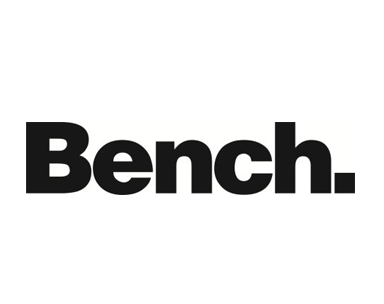
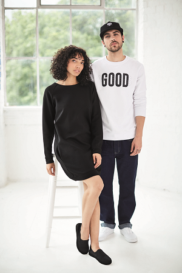

Het merk BENCH is ontstaan in 1989 in Manchester. Destijds was het een niche t-shirt merk geïnspireerd door en voor een Urben lifestyle.
Het begin van BENCH gaat terug naar de meest iconische momenten uit de stedelijke muziek geschiedenis van Manchester. Dit was aan het einde van de jaren `80 toen de jeugd subculturen bloeiend waren, het skateboarden en de BMX fiets steeds populairder werd en de muziek zat in een stroomversnelling.
Manchester was het hart van culturele en industriële innovatie. Dit was de plek waar alles gebeurde. Artiesten en bands uit deze tijd zoals New order, The Smiths, Happy Mondays en Stone Rose behoorden tot de groep die geïnspireerd werden door de 24-uurs revolutie.
In de late jaren `80 en begin jaren `90 stond de muziek op zijn kop en deed DANCE SCENE zijn introductie. BENCH heeft hier veel inspiratie uit kunnen halen en heeft tot op de dag van vandaag een sterke associatie met de muziek. BENCH groeide door deze partyscene enorm door dat ze kwamen met comfortabele kledij, speciaal ontworpen voor elk moment van de dag. Of je nu naar school ging, moest werken of wou stappen: BENCH was op ieder moment draagbaar.
Ontwikkeling
In de loop der jaren heeft het merk snel veel populariteit gewonnen. Veel waardering kreeg het merk voor de innovatie dat BENCH liet zien in de steeds groter en bredere collecties. BENCH was destijds ook het eerste merk dat kwam met een Brand Logo op de schouder en de off centre zipper dat nu nog steeds terug komt in meerdere artikelen uit de collectie. Bench heeft zich ontwikkeld tot een breed en zeer gerespecteerd urben lifestyle merk dat zelfs in 2008 door het COOLBRANDS panel (Engels website over BRANDS wereldwijd) werd uitgeroepen tot het coolste streetwear merk van dat moment.
Het synoniem voor BENCH is niet alleen mode maar ook stedelijke cultuur, lifestyle en kunst behoren hierbij. Voor het 4de jaar op een rij is BENCH sponsor van het grootste festival in Duitsland: het Melt Festival. En ook in Ibiza laat Bench van zich horen en organiseren ze feesten in een van de bekendste clubs van Ibiza: The SPACE.
Muziek, dans, sport, technologie, street style, voedsel en het sociale leven. Dit zijn de sub culturen die de steden vormen waarin wij leven... Dit zijn de invloeden die de creativiteit van de ontwerpers voeden en voor deze groep een draagbare collectie ontwerpt.
Vandaag de dag
Sinds het bescheiden begin in Manchester, heeft BENCH de distributie wereldwijd uitgebreid, het merk wordt nu verkocht in meer dan 30 landen in Europa, de VS, Canada en zelfs in Australië. Ze opende hun eerste Brand winkel in Berlijn. De collecties van BENCH worden ontworpen door te kijken naar "echte" mensen naar een individu en niet mee te gaan met de hedendaagse mode en trends maar een commerciële collectie te maken voor “iedereen die van het leven geniet†de mensen voor wie het is bedoeld. Ook nu worden bekende mensen regelmatig gespot met BENCH denkt hierbij aan Lady Gaga en Heuy Morgan Van de Fun lovin` Criminals.